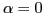

Since there is a
factor in the integrand of the above integral,
the important contribution to the integral must come from the vicinity of
 (i.e. resonant particles). Therefore we expand
 as
as
 |
(37) |
Since
is odd in  , only terms that are
also odd need to be retained in the above expansion. Using these, expression
(36) is written as
, only terms that are
also odd need to be retained in the above expansion. Using these, expression
(36) is written as
Using these results, Eq. (35) is written as
which agrees with Eq. (16) in Chapter 8 of Stix's book[4].
Equation (39) indicates that the time rate of change of the
averaged kinetic energy of resonant particles is proportional to the
derivative of the initial distribution function at the phase
velocity of the wave.
yj
2016-01-26